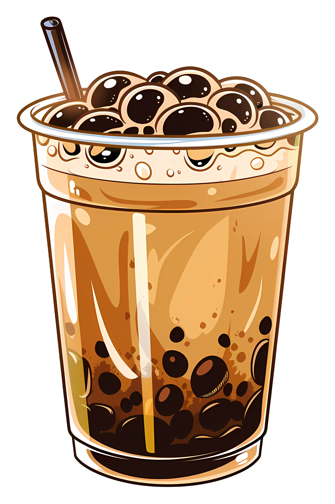

Credits and resources
Attributions.
Explore the resources, technologies, and media used to create the Davao Milk Tea Hub student project.

Original Content
Website text, drink descriptions, prices, and the local JSON drink dataset were created for the Davao Milk Tea Hub student project.
Typefaces
Open Sans and Poppins are provided by Google Fonts.
Technologies
This website uses HTML5, CSS3, JavaScript ES modules, the Fetch API, browser local storage, URL parameters, and the HTML dialog element. No CSS framework or JavaScript library is used.
Project Concept
Davao Milk Tea Hub is a fictional student project inspired by milk tea shops and local flavors in Davao City. It is not an operating business and does not accept real orders or payments.
Image and Media Credits
Images and other media used in this project should be credited to their original creators. Add the creator's name and a link to the original source for each third-party image or media asset.
Original illustrations and graphics created specifically for this student project should be identified as original project assets.
Milk tea hero image:
Add the image creator and original source here after
confirming the source of
images/milk-tea-attributions.webp.
Favicon:
images/favicon.svg — add the creator
or source if this asset was obtained from a third party.
Project Disclaimer
This website was developed for the WDD231 individual course project. Menu items, prices, and order requests are for demonstration purposes only.
No real transactions, payments, or shop orders are processed by this website.